Port City Shopping & Entertainment Center
Retail / Entertainment • Design-Build GC • Altis • Lutsk, Ukraine
Overview
Client / Contractor: Altis (Ukraine)
Port City in Lutsk is a regional shopping and entertainment center with non-food retail, cinemas, bowling, a roller-drome, cafés and restaurants, offices, and an underground parking level. The architectural concept and interior design were prepared by UGNIA (Lithuania). Altis then developed the full schematic design package, obtained all authority approvals and the building permit, built a coordinated BIM model to remove clashes, and issued the IFC package for construction.
As Project Manager I coordinated the design development between UGNIA, Altis’s in-house engineers, and local authorities, and then oversaw delivery. Altis self-performed and managed about 70% of the construction scope, including deep foundations, RC works, 3,200 t of steel superstructure, full envelope, MEP and life safety, vertical transport, and public-area fit-outs.
Scope of Work
- 1. Design & Permitting: concept and interiors by UGNIA → adaptation by Altis; full schematic design; BIM model to avoid design snags; authority approvals; building permit; IFC documentation issued for all disciplines.
- 2. Groundworks & Substructure: relocation of the existing 600 mm water main out of the building footprint; bored injection piles for excavation support and under the main building; excavation of the pit, weak-soil replacement, drainage; precast RC piles (jacked) for the retaining wall along Sukhomlynskogo St with factory RC panels using Reckli liners for architectural concrete; tie/capping beams; slab-on-grade for parking and slab at –0.10.
- 3. Superstructure & Envelope: vertical RC elements (columns, lift and stair cores); erection of ≈3,200 t structural steel frame including 36 m-span trusses over the roller-drome; composite slabs on profiled deck; ≈150 t of secondary steel for partitions and façade framing; full enclosing structures using KingSpan and ArcelorMittal panel systems; all glazed/transparent envelope elements.
- 4. MEP, Energy & Life Safety: internal engineering networks and plant rooms (ventilation rooms, transformer substation, diesel generator); vertical transportation (travelators, escalators, passenger/service lifts); utility entries and stormwater pump stations; active fire-protection systems (smoke extraction, pressurization, sprinkler and hose systems with tanks and pump room, automatic fire alarm, voice evacuation, fire post); internal cold/hot water, sanitary and storm drainage; ventilation, heating and cooling on chiller–fan-coil scheme; 4.5 MW gas boiler plant; low-voltage systems (LAN, CCTV, security, access control) and BMS/dispatching; passive fire-protection measures (firestopping, fire doors, fire-rated glazing).
- 5. Fit-out & Site: premium public-area finishes, offices and tenant zones, BOH finishes, doors and gates, multimedia systems (background music, exterior LED screen, wayfinding), on-site roads and parking, landscaping and small architectural forms.
Challenge
Build a multi-program retail and leisure facility on Sukhomlynskogo 1 while relocating a major water main, executing deep foundations and a large hybrid RC–steel structure, and installing a dense MEP and fire/life-safety package — all under a contractor-led Design-Build/GC model with Altis self-performing most of the work.
Solution
Altis used BIM for early clash detection, split the work into clear substructure/superstructure/MEP phases, ran procurement in parallel with design finalization, and centralized coordination of fire, vertical transport, and LV systems to ensure a single, testable handover.
Result
A fully serviced, tenant-ready shopping and entertainment center with underground parking, premium public finishes, and complete MEP and fire/life-safety systems, delivered under ISO 9001 procedures with ~70% of construction works performed by Altis.
Project Facts
Design Intent
Additional Information
Architectural concept and interiors by UGNIA (Lithuania); adaptation, permitting, BIM and IFC by Altis.
Address in Google Maps: “Луцьк, Сухомлинського 1”.
My Responsibilities
- Coordinated design development between UGNIA, Altis in-house teams, and authorities.
- Clearly identified the scope of work for each project by interpreting specifications, gathering information, and preparing estimates for arising works, ensuring client satisfaction and profitable completion.
- Oversaw BIM clash resolution to protect schedule and procurement.
- Prepared and administered bid / subcontract packages.
- Managed execution of Altis’s self-performed works (≈70% of total scope).
- Supervised MEP, fire and life-safety integration and commissioning.
- Reported progress, cost, and risk to the owner/developer.
Gallery
 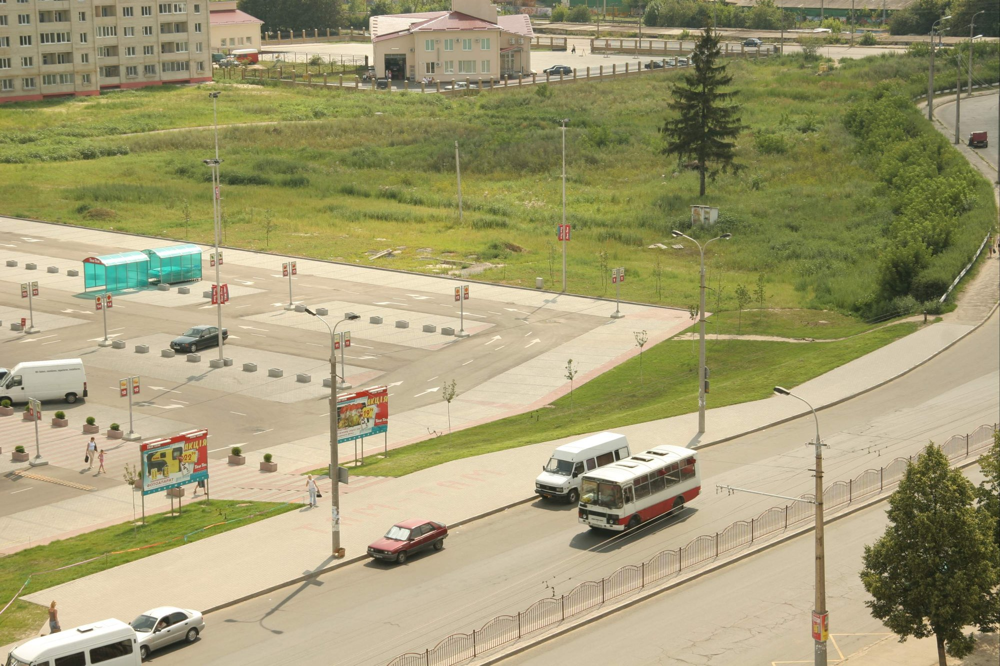
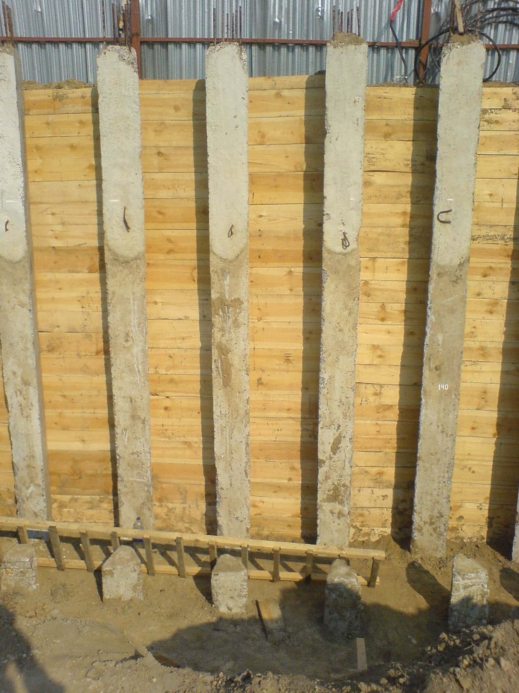
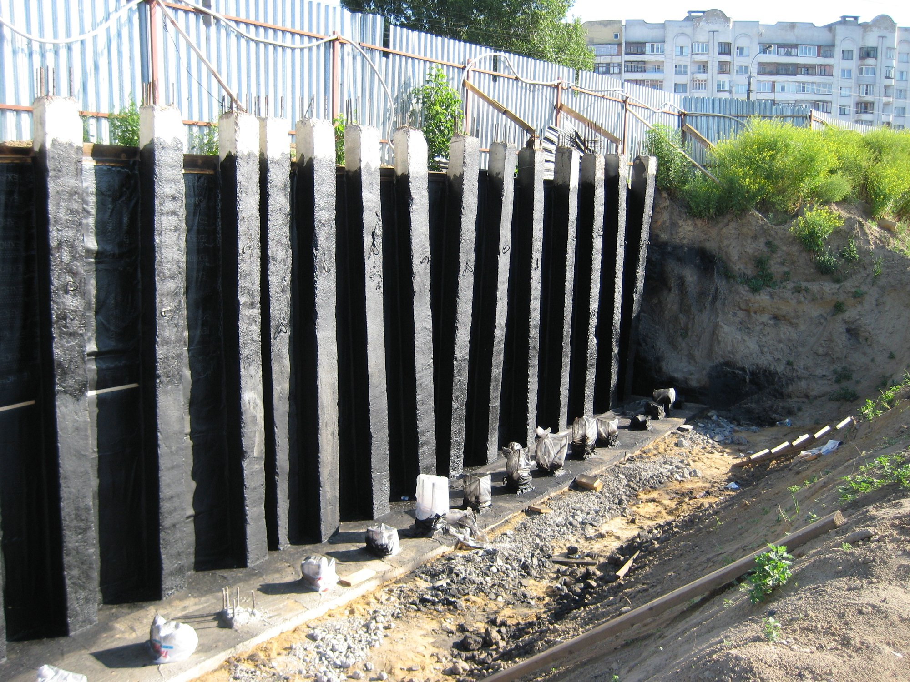
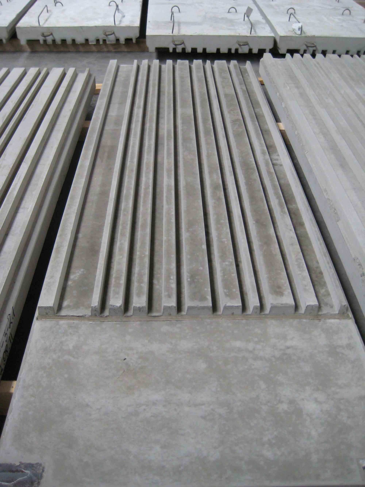
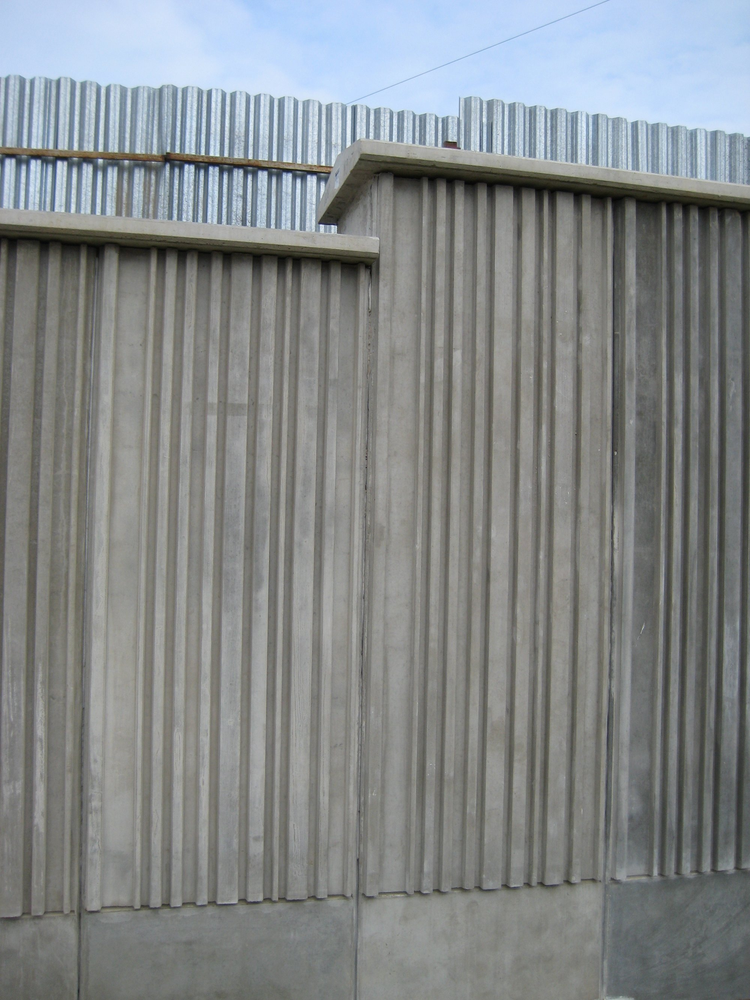
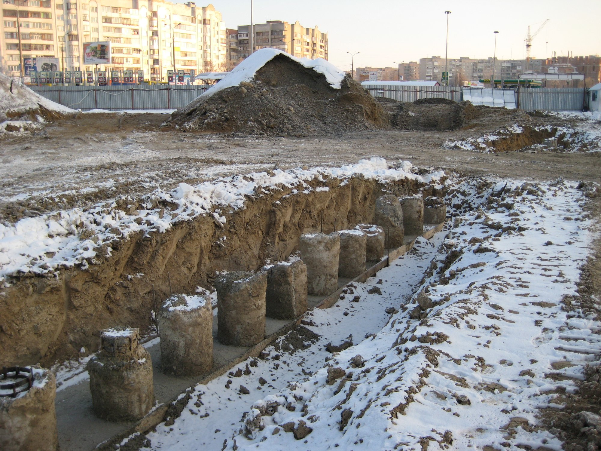
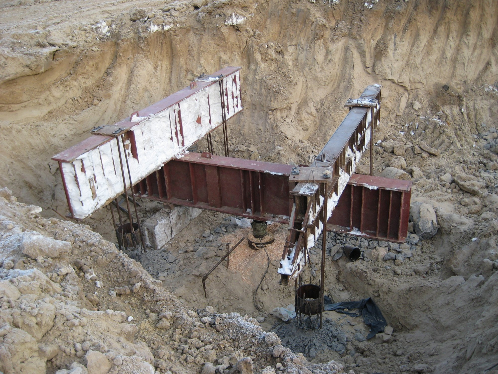
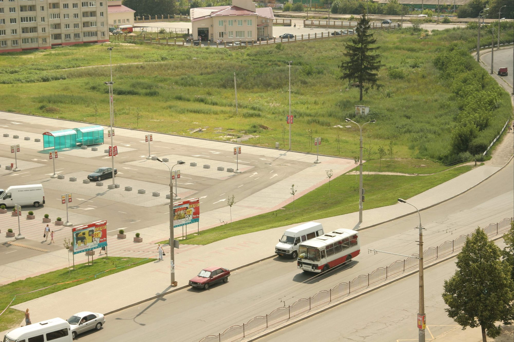
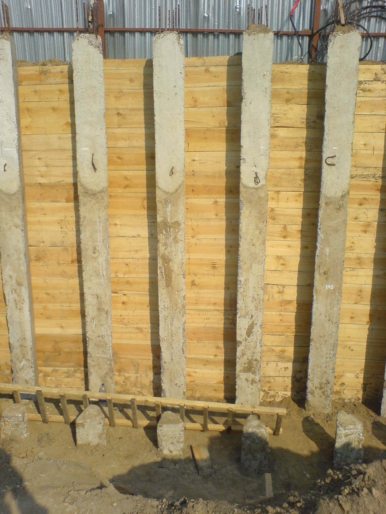
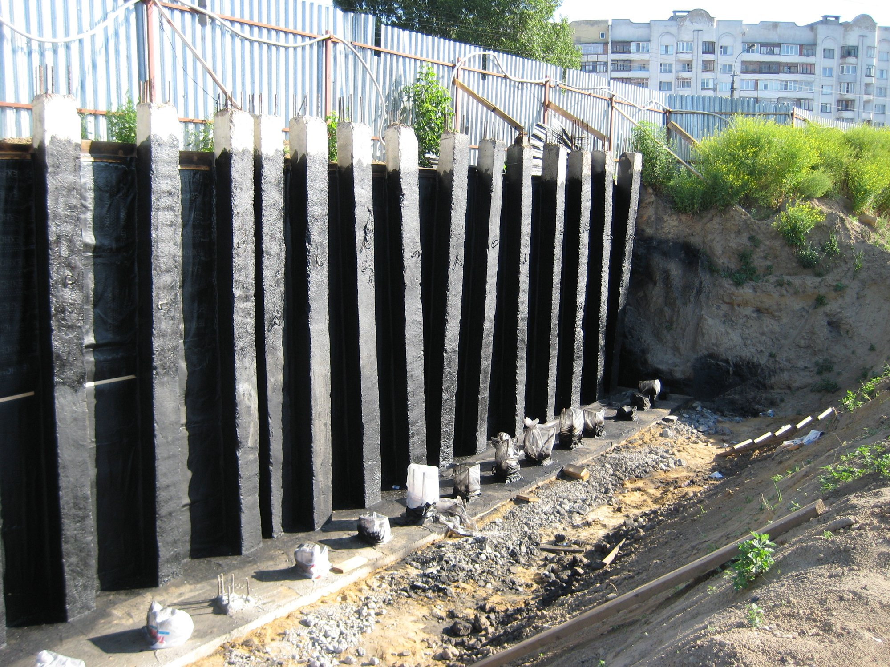
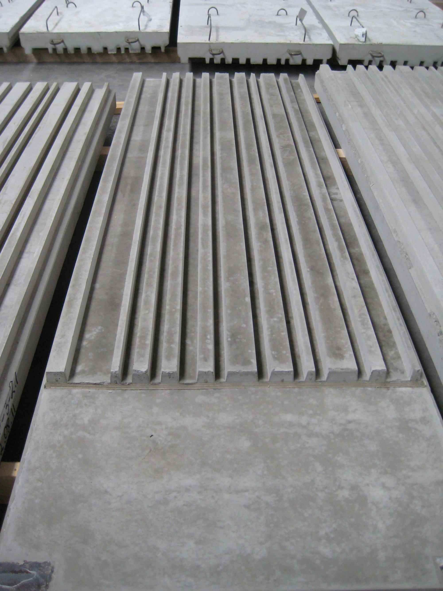
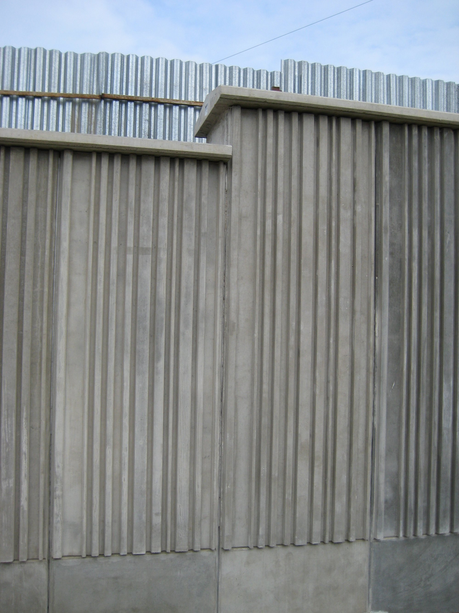
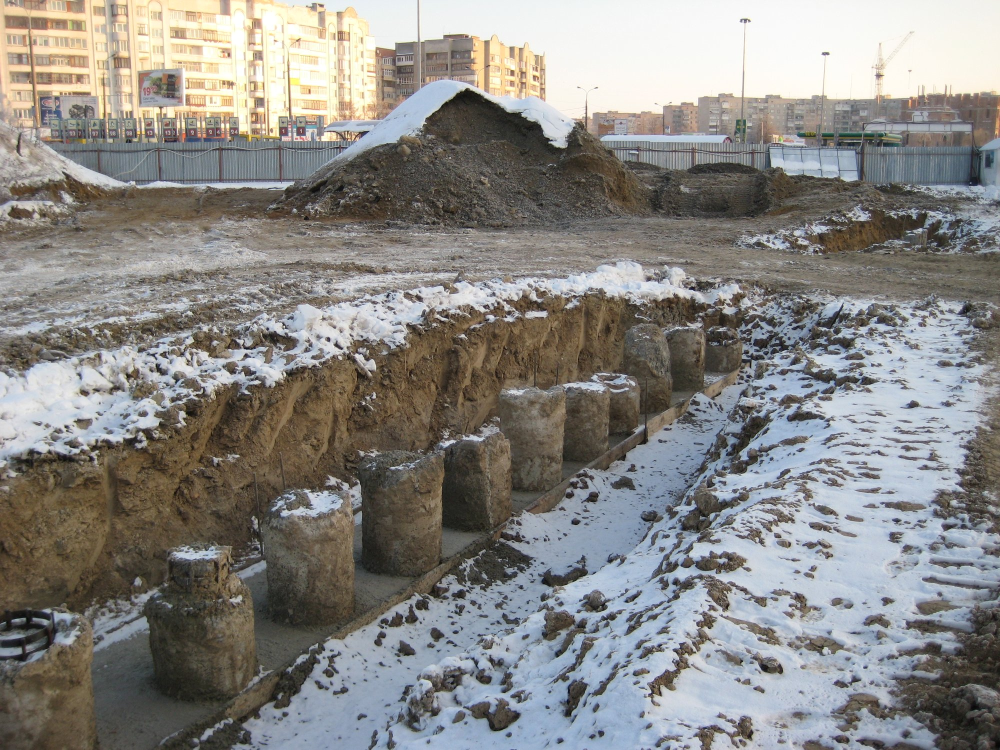
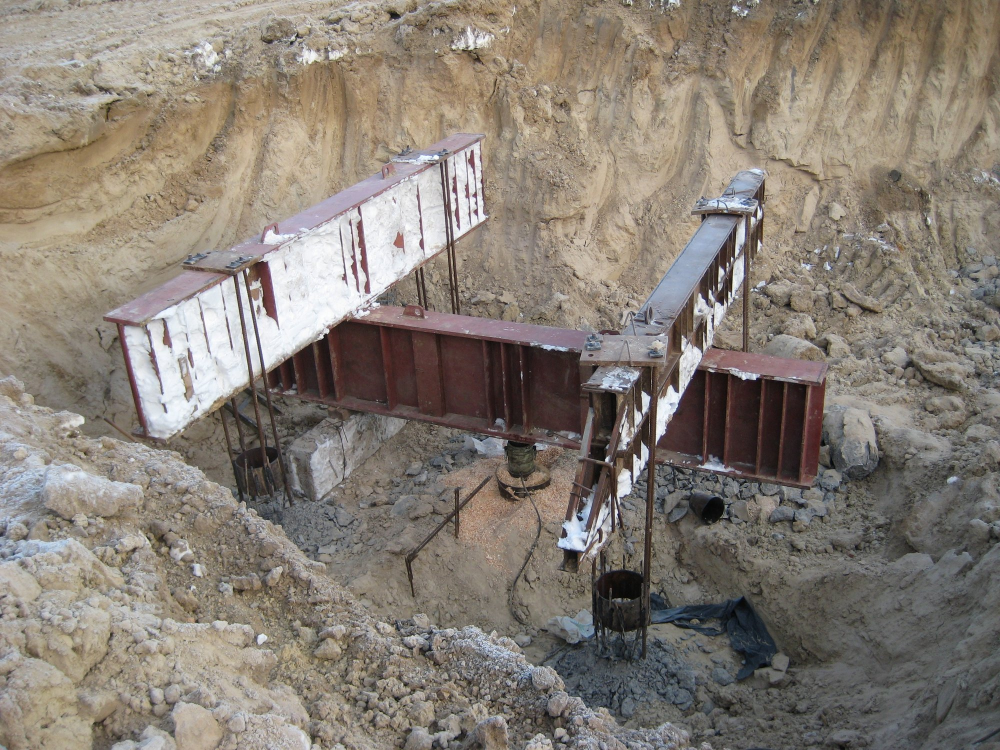